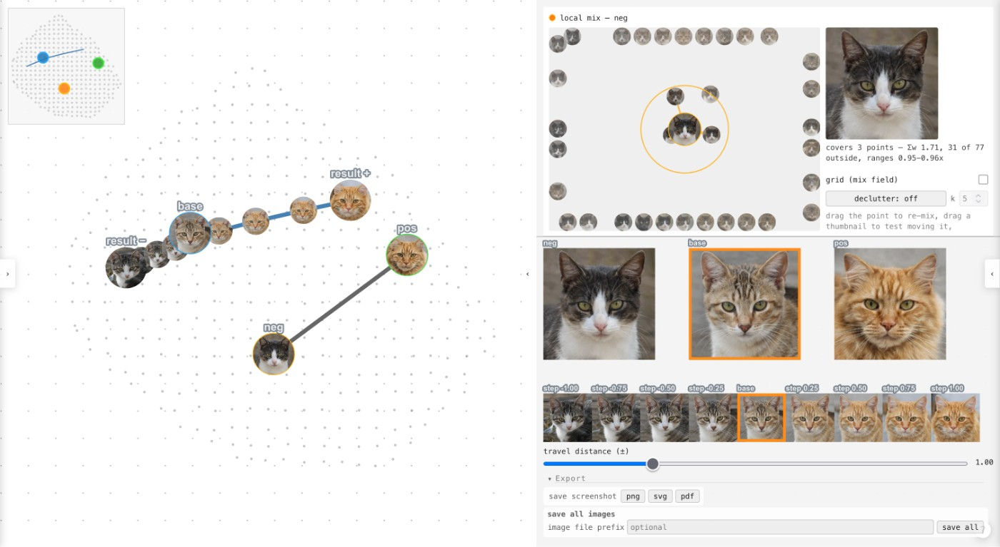

把“更像这张”变成操作
选图时，用户常能立即指出哪张更接近自己的想法，却说不清需要修改的属性名。PolyGandr允许用基础图和正反样例表达方向，再调节步长。一个可考虑的设计任务是寻找适合系列包装的角色气质：先比较整体印象，再保留有用候选，而不是每次重新编写一长段描述。这里减少的可能是意图翻译，而非所有筛选工作；若样例同时改变颜色、形状和构图，拖动方向也可能混入几种变化。设计师仍应逐项检查哪些变化符合要求，不能因为结果更像参考图就认定任务已经完成。
PolyGandr · 论文／研究原型

选图时，用户常能立即指出哪张更接近自己的想法，却说不清需要修改的属性名。PolyGandr允许用基础图和正反样例表达方向，再调节步长。一个可考虑的设计任务是寻找适合系列包装的角色气质：先比较整体印象，再保留有用候选，而不是每次重新编写一长段描述。这里减少的可能是意图翻译，而非所有筛选工作；若样例同时改变颜色、形状和构图，拖动方向也可能混入几种变化。设计师仍应逐项检查哪些变化符合要求，不能因为结果更像参考图就认定任务已经完成。
原型用UMAP组织全局地图，以正负潜向量之差调整基础向量。二维地图和局部混合面板提供互相对应的探索入口。对编辑体验而言，保持这些入口一致很重要：用户在局部看到的候选，应能回到自己理解的全局位置，避免每次调整都失去上下文。可以把地图当成一张工作台，先把相近候选放在一起，再比较边界；不要把两点相距很近解释成只有一项属性不同。复杂生成空间压到平面后，某些差异必然不易表达。因此产品界面最好让人同时看原图、变化结果和所选参照，而不是只显示一个孤立坐标。
论文涉及图像生成与剪纸结构探索，但相同交互不代表相同约束。如果目标是情绪板，挑到合适方向就可能足够；如果目标是一件要加工的物体，就还需要尺寸、连接和材料判断。这种区别影响保存内容：除了结果图片，团队可能需要保留参照、选取理由与约束版本，供后续人员继续工作。产品采用可以先从允许大量试错的早期概念阶段开始。对明确的数值改动，直接编辑参数通常更容易解释；把所有需求都塞进潜在空间拖动，反而可能增加复核负担。
实际使用时值得观察的是，设计师能否找回刚才满意的版本，并解释后续调整为何改变了它。可把同一任务分成自由探索和约束修改两段，比较保留候选、返回先前结果与交接所需的操作，而不是只统计一次生成有多快。论文中的领域专家演练不能代表所有设计人员的日常效率，也没有建立商业供货。对采购或产品化团队，另一个问题是模型切换后地图和已保存方向是否还能保持含义；在没有具体保证前，应把这些状态绑定到对应模型与工作会话。